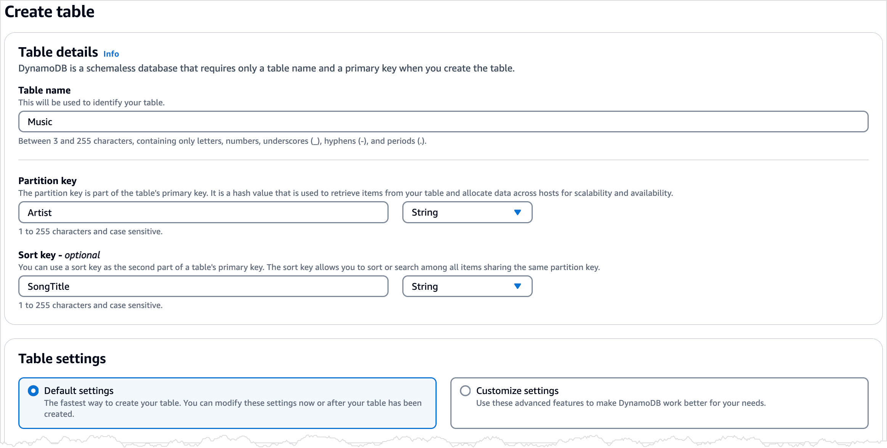

Guia da demonstração — DynamoDB na AWS
O que o vídeo vai mostrar
| Parte | O que aparece | Conceito da apresentação |
|---|---|---|
| A · Console | Criar a tabela Music, inserir itens, fazer Query e PartiQL | Serverless, modelo de dados, chave primária |
| B · CloudShell | Script Python: escrita sequencial × paralela, latência p50/p99, Query × Scan | Escala horizontal, paralelismo, latência previsível, partições |
| C · Métricas | Aba Monitor da tabela (CloudWatch) | Serviço gerenciado / observabilidade |
1Conta na AWS
- Acesse aws.amazon.com/free e clique em criar conta.
- Informe e-mail, nome da conta e senha. A AWS pede um cartão e um telefone para verificação de identidade.
- Quando perguntar o plano, escolha o plano gratuito (Free plan). Nele não há cobrança: novos clientes recebem créditos (até US$ 200 por 6 meses) e o DynamoDB está entre os serviços “sempre gratuitos” dentro dos limites mensais (25 GB de armazenamento, entre outros).
Proteção recomendada (5 minutos)
- MFA na conta raiz: canto superior direito → seu nome → Security credentials → Assign MFA device (use um app autenticador no celular).
- Alerta de gastos: pesquise Budgets na barra de busca do console → Create budget → modelo Zero spend budget → seu e-mail → criar. Você recebe um e-mail se qualquer centavo for cobrado.
2Escolha a região
No canto superior direito do console há o seletor de região. Escolha uma e use a mesma em tudo:
- América do Sul (São Paulo) —
sa-east-1: fica bonito na apresentação (“dados em São Paulo”). - US East (N. Virginia) —
us-east-1: é a região usada nos exemplos e preços da documentação.
3Parte A — Console: tabela, itens e consultas
Baseado no tutorial oficial Getting started with DynamoDB.
3.1 Criar a tabela Music
- Na barra de busca do console, digite DynamoDB e abra o serviço.
- No menu da esquerda, Tables → Create table.
- Table name:
Music· Partition key:Artist(String) · Sort key:SongTitle(String). - Em Table settings, deixe Default settings. Confira no resumo que o Capacity mode está como On-demand (se não estiver, escolha Customize settings e selecione On-demand).
- Create table. Em alguns segundos o status muda para Active.

Tela de criação da tabela (imagem da documentação da AWS).
3.2 Inserir itens
- Clique na tabela Music → Explore table items → Create item.
- Preencha
ArtisteSongTitle. Para adicionar outros campos: Add new attribute → escolha o tipo. - Crie estes 4 itens (note que eles não têm os mesmos atributos — é de propósito, para mostrar que não há esquema fixo):
| Artist | SongTitle | Outros atributos |
|---|---|---|
| No One You Know | Call Me Today | AlbumTitle (String) = Somewhat Famous · Awards (Number) = 1 |
| Acme Band | Happy Day | AlbumTitle = Songs About Life · Awards = 10 |
| Acme Band | PartiQL Rocks | AlbumTitle = Another Album Title · Awards = 8 |
| Acme Band | Still in Love | Genre (String) = Rock · Year (Number) = 2015 |
{
"Artist": "Acme Band",
"SongTitle": "Still in Love",
"Genre": "Rock",
"Year": 2015
}3.3 Query pela chave
- Ainda em Explore table items, abra Scan or query items e selecione Query.
- Partition key:
Acme Band→ Run. Devolve só as 3 músicas da banda, já ordenadas pela sort key. - (Opcional) Adicione condição na sort key: Begins with
H→ devolve só “Happy Day”.
3.4 PartiQL (sintaxe parecida com SQL)
- No menu da esquerda, PartiQL editor.
- Cole e clique em Run:
SELECT * FROM "Music" WHERE Artist = 'Acme Band'
INSERT INTO "Music" VALUE {'Artist': 'UEPB Band', 'SongTitle': 'Alto Desempenho', 'Year': 2026}4Parte B — CloudShell: o teste de desempenho
O script demo/demo_dynamodb.py (está na pasta do projeto) faz quatro coisas:
- cria a tabela
LeiturasSensores(partition keysensor_id, sort keyts, on-demand); - grava 2.000 leituras de 20 sensores — 200 uma por vez e 1.800 com 16 threads em paralelo (lotes de 25 com
BatchWriteItem) — e compara itens/segundo; - faz 300 leituras por chave (
GetItem) e mostra a latência média, p50, p90 e p99, com leitura eventual e forte; - busca as leituras de um sensor com Query e com Scan e compara itens lidos, capacidade consumida e tempo.
4.1 Abrir o CloudShell e enviar o script
- No console (na mesma região da tabela), clique no ícone de terminal >_ na barra superior, ou pesquise CloudShell. Espere o terminal abrir (~30 s na primeira vez).
- Menu Actions → Upload file → selecione
demo_dynamodb.py(pastademodo projeto). - Confira:
lsdeve listar o arquivo.
Sem upload? Cole o script direto no terminal
Digite cat > demo_dynamodb.py << 'EOF', tecle Enter, cole todo o conteúdo do arquivo, tecle Enter, digite EOF e Enter. O CloudShell pode mostrar um aviso de “Safe Paste” — confirme com Paste.
4.2 Rodar
python3 demo_dynamodb.py
Leva cerca de 20–40 segundos (a maior parte é a criação da tabela). Saída esperada (os números vão variar):
================================================================ 2) Escrita de 2000 itens: sequencial x paralela ================================================================ Sequencial (PutItem, 1 por vez) : 200 itens em 1.2 s → 170 itens/s Paralela (16 threads, lotes de 25): 1800 itens em 0.6 s → 3000 itens/s Ganho com paralelismo: 17.6x ================================================================ 3) Latência de 300 leituras por chave (GetItem) ================================================================ Leitura eventual média 4.10 ms | p50 3.90 | p90 5.00 | p99 9.80 ms Leitura forte média 4.40 ms | p50 4.20 | p90 5.30 | p99 10.50 ms ================================================================ 4) Buscar as leituras de UM sensor: Query x Scan ================================================================ QUERY → retornou 100 | leu 100 itens | 1.0 RCU | 8.0 ms SCAN → retornou 100 | leu 2000 itens | 20.0 RCU | 120.0 ms
Valores ilustrativos — use os da sua execução na narração.
4.3 Como interpretar (para a narração)
- Sequencial × paralela: uma requisição por vez desperdiça tempo esperando a rede. Com várias threads e lotes, muitas requisições ficam em voo ao mesmo tempo e o DynamoDB as atende em paralelo, em partições diferentes. É a mesma ideia de paralelismo da disciplina.
- Latência: o tempo medido inclui a ida e volta pela rede dentro da região. O importante é o p99 continuar baixo: “latência previsível”.
- Eventual × forte: a diferença costuma ser pequena; a leitura forte custa o dobro de capacidade porque precisa do líder.
- Query × Scan: a Query vai direto na partição da chave; o Scan lê a tabela inteira e só depois filtra. Mesmo resultado, ~20× mais capacidade consumida. Em uma tabela de terabytes a diferença seria gigantesca.
python3 demo_dynamodb.py --apagar.5Parte C — Métricas
- Volte ao DynamoDB → Tables → LeiturasSensores → aba Monitor.
- Mostre os gráficos de capacidade de leitura/escrita consumida e de latência. Os pontos aparecem com 1 a 5 minutos de atraso — então grave esta parte alguns minutos depois de rodar o script.
O que isso quer dizer?
Parte A: criamos uma tabela sem configurar nenhum servidor e encontramos as músicas só informando a chave. Isso quer dizer que o DynamoDB cuida da infraestrutura sozinho, e a chave é o caminho direto até o dado.
Escrita: gravar em paralelo foi muitas vezes mais rápido do que gravar um item por vez. Isso quer dizer que os dados estão espalhados em várias partições que trabalham ao mesmo tempo — é a escala horizontal acontecendo na prática.
Latência: as leituras responderam em poucos milissegundos, e até as mais lentas (p99) continuaram rápidas. Isso quer dizer que o tempo de resposta é previsível, e não apenas rápido na média.
Query × Scan: a Query leu 100 itens; o Scan leu 2.000 para chegar ao mesmo resultado. Isso quer dizer que, no DynamoDB, o desempenho depende de buscar pela chave — numa tabela gigante, essa diferença seria enorme.
Parte C: as métricas mostraram o uso gerado pelo teste, sem instalarmos nada. Isso quer dizer que o serviço já vem monitorado e pronto para produção.
Em resumo: o DynamoDB é rápido em qualquer escala porque divide os dados pela chave e trabalha em paralelo — o mesmo princípio da computação de alto desempenho que estudamos na disciplina.
6Gravar o vídeo
Roteiro do vídeo (~3min30)
Grave seguindo as cenas abaixo. Na tela é o que fazer; a caixa amarela é o que você diz ao vivo enquanto o vídeo passa (o mesmo texto está no slide 16 do roteiro). Rode o script uma vez antes para já saber os números e preencher as lacunas.
Na tela: DynamoDB → Create table → Music, Artist, SongTitle → Create table → esperar Active.
“Começo no console da AWS. Para criar uma tabela, só preciso de um nome e da chave: o artista define a gaveta, e o nome da música, a ordem dentro dela. Não escolho servidor nem disco. Em poucos segundos, a tabela está pronta.”
Na tela: Explore table items → Create item → criar 2 itens (os outros podem estar prontos) → mostrar a lista.
“Agora coloco algumas músicas. Reparem que cada uma tem campos diferentes — uma tem prêmios, outra tem gênero. Como vimos, só a chave é obrigatória.”
Na tela: Query com Acme Band → Run. Depois PartiQL editor com o SELECT.
“Quero só as músicas da Acme Band. Como informei a chave, o DynamoDB vai direto na gaveta certa e traz só elas, já em ordem. No editor PartiQL, faço o mesmo com um comando parecido com SQL.”
Na tela: abrir o CloudShell → digitar python3 demo_dynamodb.py → Enter.
“Agora, o desempenho. Este é o CloudShell, um terminal dentro da própria AWS. Rodo um script que cria uma tabela de sensores e grava duas mil leituras.”
Na tela: parar no bloco 2) Escrita por alguns segundos (dê zoom na edição).
“Gravando uma leitura por vez, foram por segundo. Com dezesseis gravações em paralelo, por segundo — vezes mais rápido. São as gavetas trabalhando ao mesmo tempo.”
Na tela: parar no bloco 3) Latência.
“Agora, trezentas leituras. Metade respondeu em menos de milissegundos, e 99% ficaram abaixo de . A leitura forte, que consulta a líder, ficou quase igual.”
Na tela: parar no bloco 4) Query x Scan.
“Por último, busco as leituras de um sensor de dois jeitos. Pela chave, o banco leu só cem itens. Varrendo a tabela inteira, leu dois mil para achar os mesmos cem. Por isso a chave é tão importante.”
Na tela: tabela LeiturasSensores → aba Monitor (grave alguns minutos depois do script).
“Na aba de monitoramento, dá para ver o pico de uso que o teste acabou de gerar.”
Na tela: apagar as tabelas (Delete → confirm).
“Para terminar, apago as tabelas, para não deixar nada rodando. E esse foi o DynamoDB funcionando na prática.”
Como gravar no Windows
- Ferramenta de Captura (Snipping Tool):
Win + Shift + R→ selecione a área do navegador → Iniciar. Salva em MP4. - Xbox Game Bar: com o navegador em foco,
Win + Alt + Rinicia/para a gravação. O arquivo fica emVídeos\Capturas. - OBS Studio (gratuito) se quiser mais controle.
Dicas para ficar legível no projetor
- Aumente o zoom do navegador para 125–150% (
Ctrl +). No CloudShell, aumente a fonte em ⚙ Preferences → Font size: Large. - Use o tema claro do console e feche abas e notificações.
- Edite no Clipchamp (já vem no Windows 11): corte as esperas, acelere trechos lentos (1,5–2×) e dê zoom na saída do script.
- Grave sem áudio e narre ao vivo com as falas acima (também estão no slide 16 do roteiro).
demo.mp4 dentro da pasta video do projeto. O slide 16 carrega o vídeo automaticamente de video/demo.mp4.7Limpeza (não pule)
- No CloudShell:
python3 demo_dynamodb.py --apagar - No console: Tables → marque Music → Delete → digite
confirm. - Confira em Billing and Cost Management que o custo está em US$ 0,00.
8Se algo der errado
| Sintoma | Causa provável / solução |
|---|---|
AccessDeniedException | Usuário sem permissão de DynamoDB. Use a conta raiz/administrador, ou no AWS Academy confira se o lab está iniciado. |
ModuleNotFoundError: boto3 | Rode pip3 install --user boto3 no CloudShell e tente de novo. |
| Tabela não aparece no console | Região diferente no seletor (canto superior direito). |
| Ganho do paralelismo pequeno | Normal variar. Rode de novo; a primeira execução logo após criar a tabela pode ser mais lenta. |
| Gráficos do Monitor vazios | As métricas demoram alguns minutos. Espere e atualize. |
| Vídeo não aparece no slide 16 | Confira o nome exato video/demo.mp4 e que slides.html está na mesma pasta que a pasta video. |
Checklist do dia
- Pasta inteira copiada (slides.html + img/ + video/) — não só o .html
- Vídeo tocando no slide 16 no computador da sala
- Navegador em tela cheia (
F) e testado com o passador de slides - Roteiro aberto no celular ou impresso
- Tabelas apagadas na AWS